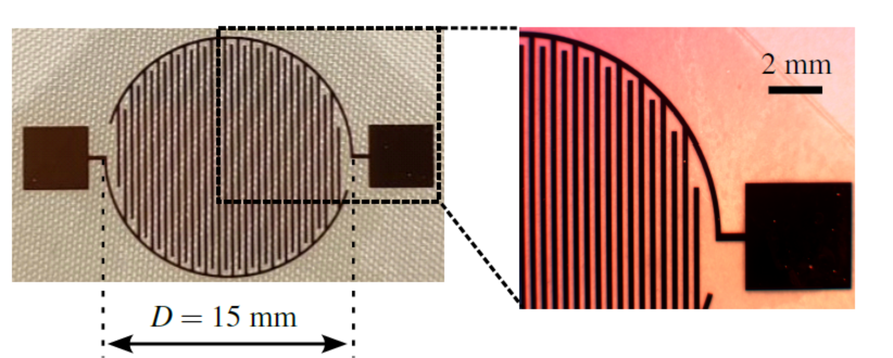
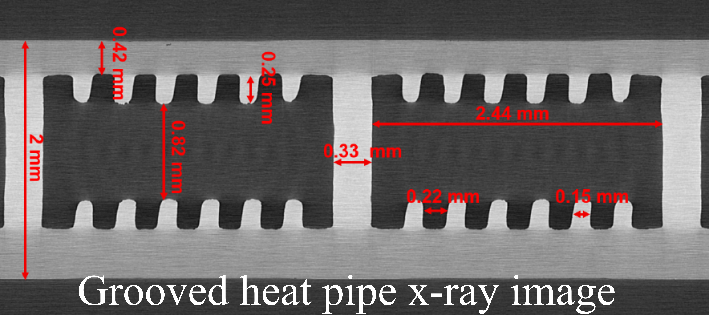

16 September 2026
Dagmar successfully defends her MSc. thesis with cum laude!
Congratulations to Dagmar for defending his thesis titled: Linking meniscus variation to local thermal resistances in flat-grooved heat pipes
Heat Transport & Interfacial Phase-Change Physics
The HiPhy Lab at the University of Twente studies heat transport, fluid flow, and interfacial phase-change phenomena across a wide range of temperatures and pressures.
Our research focuses on heat transfer and fluid flow involving phase changes, with a particular emphasis on CO₂, investigated through both experiments and simulations. Understanding these transitions is key to advancing energy-efficient technologies that use CO₂ as a natural working fluid - from cryogenic carbon capture and ultra-low-temperature refrigeration to high-temperature heat pumps, spray cooling, cold-chain logistics, thermal energy storage, and thermal management in electronic devices.




1 / 5
Congratulations to Dagmar for defending his thesis titled: Linking meniscus variation to local thermal resistances in flat-grooved heat pipes
Dr. Abhishek Purandare has been awarded an NWO Veni grant to investigate the formation of solid CO2 on cold surfaces.
Congratulations to Henriko for defending his thesis titled: Cooling characteristics of supercritical CO2 flow in a tube subjected to extreme heat fluxes
Congratulations to Sergio on receiving the award for his pitch titled: THS Reactor Design Using Novel TCM.
We carried out an industry-funded project focused on the energy and mass balance of an existing cryogenic carbon capture unit.

Principal Investigator · Assistant Professor

PhD Candidate

MSc. student
MSc. student

MSc. student
The HiPhy Lab welcomes motivated students and researchers interested in heat transfer, fluid mechanics, phase-change physics, cryogenic systems, and energy technologies.
Contact us